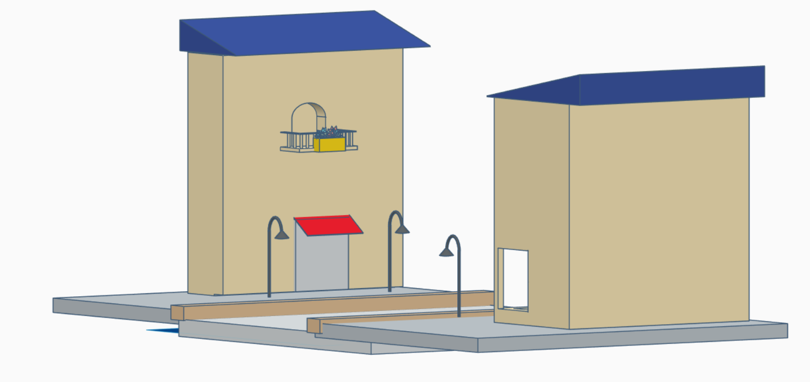
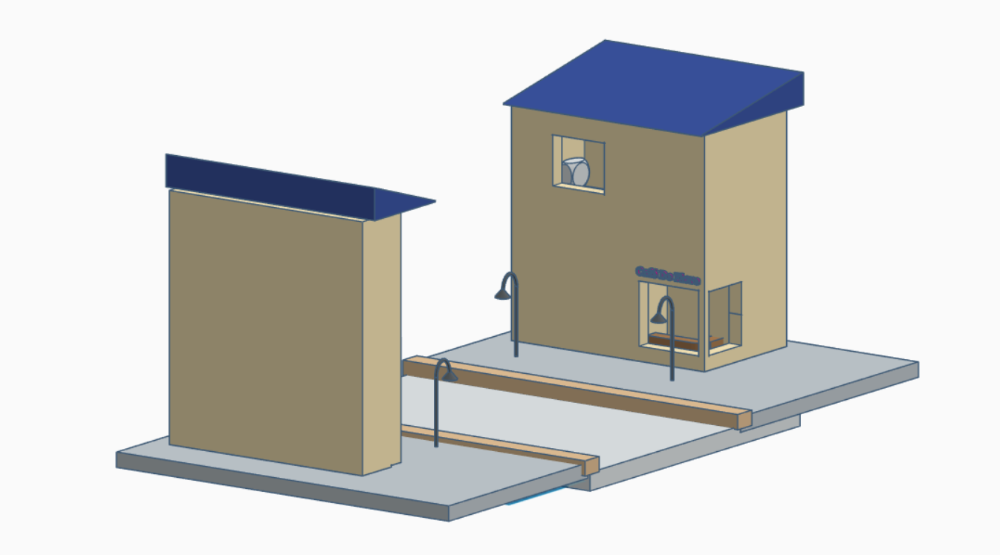
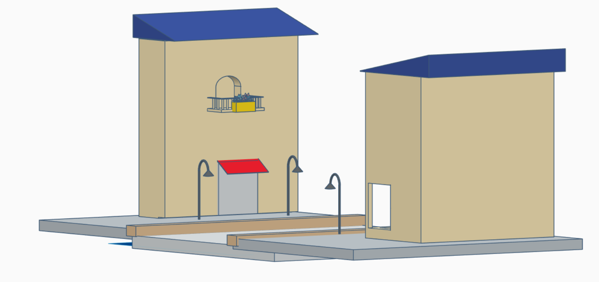
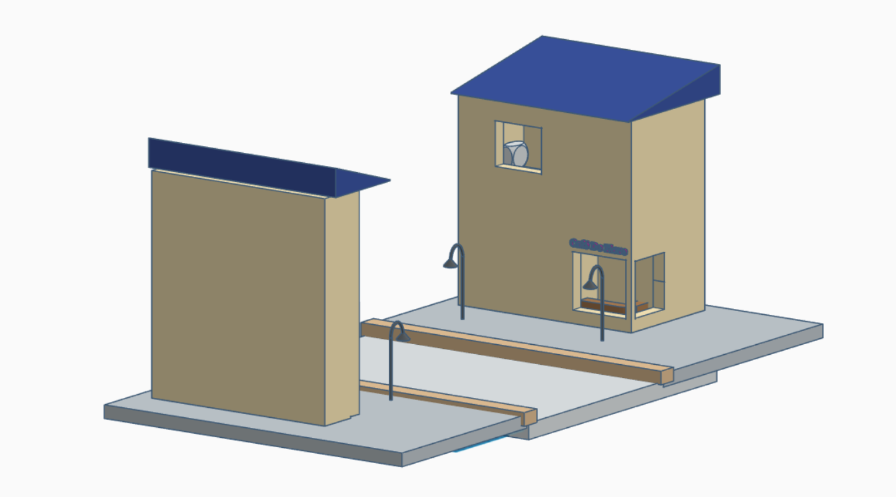

La ville Lilliputienne
Date : Mars 2020
Médium utilisé : Arduino(C++), Maquette
J'ai créé la ville lilliputienne pendant le premier confinement. Quand je regardais par la fenêtre de ma chambre, je voyais de rares passants marcher dans la rue. L'observation de ses personnes me permettait d'échaper à l'éttoufement de la situation.


 


